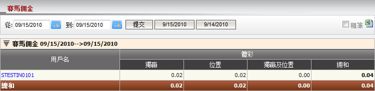
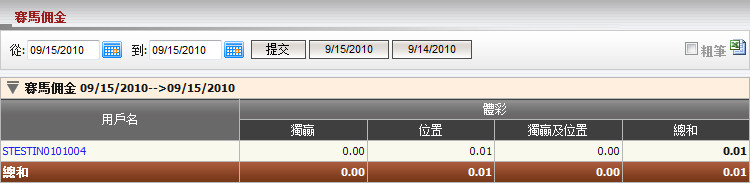
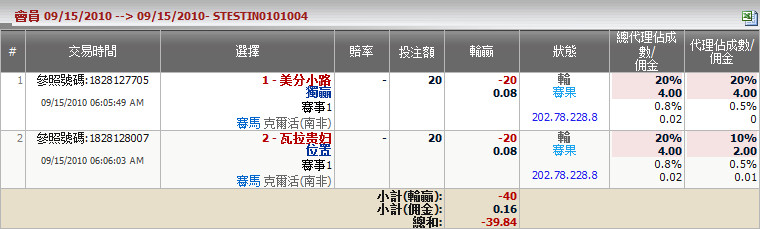

賽馬佣金
定義:
這是賽馬佣金報告, 其中個別投注類型的收入細節 (獨贏, 位置和獨贏/位置) 將被列出。 這份報告計算出總代理的收入或輸額, 根據個別代理的投注類型 (圖1.1)。

圖 1.1
用詞註解:
-
獨贏: 扣除代理佣金後, 總代理從上線出接收到的佣金數額, 根據獨贏投注類型。
- 位置: 扣除代理佣金後, 總代理從上線出接收到的佣金數額, 根據位置投注類型。
- 獨贏及位置: 扣除代理佣金後, 總代理從上線出收到的佣金數額, 根據獨贏及位置投注類型。
- 總和: 扣除代理佣金後, 總代理從上線出收到的總佣金數額。
點擊代理用戶名以查看代理於個別會員的投注類型的收入或輸額 (圖1.2)。

圖 1.2
用詞註解:
-
獨贏: 扣除代理佣金後, 總代理從上線出接收到的佣金數額, 根據獨贏投注類型。
- 位置: 扣除代理佣金後, 總代理從上線出接收到的佣金數額, 根據位置投注類型。
- 獨贏及位置: 扣除代理佣金後, 總代理從上線出收到的佣金數額, 根據獨贏及位置投注類型。
- 總和: 扣除代理佣金後, 總代理從上線出收到的總佣金數額。
如何理解報告:
為計算佣金, 我們必須點擊用戶名 (例子: member1), 然後會員投注歷史頁面將被開啟和顯示每個投注的細節如下 (圖1.3):

圖 1.3
而現在, 例子將告訴您如何計算佣金。讓我們計算master01, agent1的佣金數額如圖1.1及圖1.2所示。
圖 1.2:
- 獨贏 = 投注額 * 代理佣金 * (1 - 代理佔成) - 投注額 * 會員佣金 = 20 * 0.5% * (1 - 20%) - 20 * 0.4% = 0
- 位置 = 投注額 * 代理佣金 * (1 - 代理佔成) - 投注額 * 會員佣金 = 20 * 0.5% * (1 - 10%) - 20 * 0.4% = 0.01
- 獨贏及位置 = 0
- 總和 = 獨贏 + 位置 + 獨贏及位置 = 0 + 0.01 + 0 = 0.01
圖 1.1:
- 獨贏 = 投注額 * 會員佣金 * [1 - (總代理佔成 + 代理佔成)] - 投注額 * 代理佣金 * (1 - 代理佔成) = 20 * 0.8% * [1 - (20% + 20%)] - 20 * 0.5% * (1 - 20%) = 0.02
- 位置 = 投注額 * 總代理佣金 * [1 - (總代理佔成 + 代理佔成)] - 投注額 * 代理佣金 * (1 - 代理佔成) = 20*0.8% * [1 - (20% + 10%)] - 20 * 0.5% * (1 - 10%) = 0.02
- 獨贏及位置 = 0
- 總和 = 獨贏 + 位置 + 獨贏及位置 = 0.02 + 0.02 + 0= 0.04